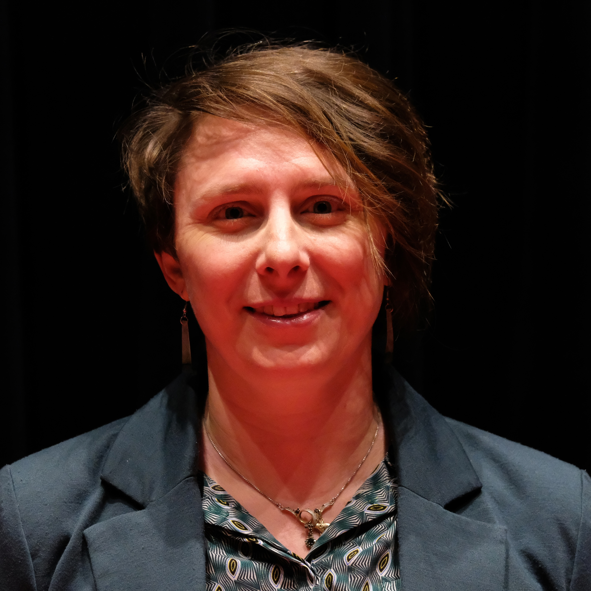

Over ons
We zijn negen vrouwen die samen
onze verhalen tot leven brengen
Dit gezelschap bestaat uit acht enthousiaste zangeressen, ieder met een eigen muzikaliteit en uitstraling. Onder leiding van Zwaan Stam brengen ze spirituals, kleinkunst en popsongs tot leven. Zo wordt elk nummer een beleving waarin het publiek het verhaal niet alleen kan horen, maar ook zien.
Muzikaal leider
Zwaan Stam
Nam sapien ante, varius in pulvinar vitae, rhoncus id massa. Donec varius ex in mauris ornare, eget euismod urna egestas. Etiam lacinia tempor ipsum, sodales porttitor justo. Aliquam dolor quam, semper in tortor eu, volutpat efficitur quam. Fusce nec fermentum nisl. Aenean erat diam, tempus aliquet erat.
Etiam iaculis nulla ipsum, et pharetra libero rhoncus ut. Phasellus rutrum cursus velit, eget condimentum nunc blandit vel. In at pulvinar lectus. Morbi diam ante, vulputate et imperdiet eget, fermentum non dolor. Ut eleifend sagittis tincidunt. Sed viverra commodo mi, ac rhoncus justo. Duis neque ligula, elementum ut enim vel, posuere finibus justo. Vivamus facilisis maximus nibh quis pulvinar. Quisque hendrerit in ipsum id tellus facilisis fermentum. Proin mauris dui, at vestibulum sit amet, auctor bibendum neque.
Sopranen
Regien Walters
Hoi, ik ben Regien!
Als klein kind zong ik al tussen de schuifdeuren. Dat zingen is mijn hele leven gebleven.
Van kerkkoor, tot bandjes, van revue tot theaterkoor. Afgelopen jaren in een vocaal theater gezongen, en meegedaan aan musicals.
En nu sinds maart bij de Sisters.. Het was even wennen, maar ik heb mijn draai gevonden. Muziek staat centraal, maar ook wie ben je als mens en wat draag je uit. Iedereen is betrokken met elkaar. Dat maakt het voor mij bijzonder.
Een warm bad en ik ga dan ook met plezier naar de oefenochtenden. En ik kijk dan ook echt uit naar ons eerste optreden!
Willeke Walters
Hoe ik, Willeke, bij Sisters Muziektheater ben gekomen?
Als 8-jarig meisje ben ik begonnen op het kerkkoor. Ook bij elke maandsluiting stond ik te zingen of toneel te spelen. Het theaterleven is mij wel met de paplepel ingegoten. Later volgen een amusementskoor, toneelgroepjes, musicals, improvisatietheater en zingen met mijn zussen. Na het laatste grote koor wilde ik een andere uitdaging, nieuw en verfrissend.
En dat is Sisters! Met een klein groepje zingen en samen bedenken wat en hoe we het willen overbrengen. Aandacht voor presentatie, en niet als een kunstje, maar met je hart en laten voelen waar we over zingen. Ik word er heel blij van en ook door weer met mijn sisters te zingen bij Sisters!
Wil je Sisters ervaren en je laten raken, kom dan 23 juni naar de Theaterkerk in Bemmel.
Etiam iaculis nulla ipsum, et pharetra libero rhoncus ut. Phasellus rutrum cursus velit, eget condimentum nunc blandit vel. In at pulvinar lectus. Morbi diam ante, vulputate et imperdiet eget, fermentum non dolor. Ut eleifend sagittis tincidunt. Sed viverra commodo mi, ac rhoncus justo. Duis neque ligula, elementum ut enim vel, posuere finibus justo. Vivamus facilisis maximus nibh quis pulvinar. Quisque hendrerit in ipsum id tellus facilisis fermentum. Proin mauris dui, at vestibulum sit amet, auctor bibendum neque.
Mezzo's
Joan Luites
Geboren in het land van Maas en Waal op de dag dat de Beatles op nummer 1 stonden, zouden voortekenen kunnen zijn voor een muzikale carrière. Op de lagere school kwam die nog niet helemaal uit de verf met het zingen in het schoolkoor en een bescheiden bijrol in de eindmusical van de zesde klas.
Daarna slokte voetbal ruim 30 jaar alle vrije tijd op. Pas toen die carrière op een lager pitje werd gezet, kwam de muziek terug in mijn leven. Met zangworkshops op Buitenkunst en als surdo speelster in de Nijmeegse sambaband Força. Toen ik met voetbalpensioen ging, kwam er ook ruimte om het zingen op te pakken. Na een zangweekend was ik verkocht en gaat er geen dag voorbij dat ik ook buiten de douche wil zingen.
Ik volg met plezier allerlei zangactiviteiten en sta ook regelmatig op een open podium. Gewoon omdat ik het heerlijk vind. In de zoektocht naar meer, vond ik muziektheater Sisters. Mijn blijdschap was groot, toen ik hoorde dat ik met ze op avontuur mocht. Inmiddels geniet ik volop tijdens de repetities, waarin we samen werken aan een voorstelling, die we in juni op meerdere momenten met het publiek zullen delen.
Kom je ook een keer kijken en luisteren?
Kim van Maanen
Nam sapien ante, varius in pulvinar vitae, rhoncus id massa. Donec varius ex in mauris ornare, eget euismod urna egestas. Etiam lacinia tempor ipsum, sodales porttitor justo. Aliquam dolor quam, semper in tortor eu, volutpat efficitur quam. Fusce nec fermentum nisl. Aenean erat diam, tempus aliquet erat.
Etiam iaculis nulla ipsum, et pharetra libero rhoncus ut. Phasellus rutrum cursus velit, eget condimentum nunc blandit vel. In at pulvinar lectus. Morbi diam ante, vulputate et imperdiet eget, fermentum non dolor. Ut eleifend sagittis tincidunt. Sed viverra commodo mi, ac rhoncus justo. Duis neque ligula, elementum ut enim vel, posuere finibus justo. Vivamus facilisis maximus nibh quis pulvinar. Quisque hendrerit in ipsum id tellus facilisis fermentum. Proin mauris dui, at vestibulum sit amet, auctor bibendum neque.
Marijke Deegens
Muziek loopt als een rode draad door mijn leven. Het is een manier om me te uiten. De combinatie van woorden en klank raken me. Het zijn verhalen. Soms om over te dromen, soms om iets te verwerken. Het maakt dat mijn lijf gaat dansen, dat mijn hart en sprongetje maakt of dat ik tranen heb van ontroering. Ik dans, speel wat piano, heb mijn sax net verkocht, en zing al een aantal jaren. Ik vond het spannend me te melden bij de Sisters, want het is muziektheater. Wat zou dat me brengen? Ik wilde mijn grenzen verleggen, vrijer worden, mijn lied verrijken en meer zeggingskracht. Dat, en veel meer, brengen deze Sisters me, een extra dimensie. De menskant, ieder is echt een uniek stukje van de puzzel. Samen vertalen we dat in deze eerste voorstelling. O ja, ik heet Marijke, leuk kennis met je te maken.
Alten
Marie Léger-St-Jean

Ik zong karaoke in Montréal, maar stapte al snel over op koorzang toen ik naar Nederland kwam. Samen zingen geeft meer reliëf, meer muzikaliteit en vooral meer plezier.
Wat ik mooi vond aan de optredens van Sisters Muziektheater die ik heb gezien, was hoe elke zangeres haar eigen persoonlijkheid zichtbaar tot uitdrukking bracht. Bij optredens met mijn andere koren (ja, meervoud!) ben ik de meest expressieve deelnemer. Ik hou van “visueel zingen”. Ik vind het fijn om bij Sisters Muziektheater niet zo alleen te zijn in mijn expressiviteit.
Natuurlijk is het voor mij persoonlijk ook heel belangrijk om meer nummers van het Nederlandstalige repertoire te ontdekken en me eigen maken. Het helpt mij zeker op de weg naar integratie in Nederland, het samen zingen met deze fantastische vrouwen. Ik kan niet wachten om het deze lente allemaal met jullie te delen!
Marja Keultjes-Walters
Ik ben Marja, geboren en getogen in Arnhem in een artistiek gezin.
Zingen hoort bij mij, ik weet niet anders dan dat ik ergens bij zing. Als klein meisje al in het kerkkoor daarna in diverse koren, a-capella/ theater groepjes, pop/rock bandjes, bigband, etc. en samen met mijn zussen, ook in een jazzband.
Door muziek heb ik zulke mooie, leuke en bijzondere dingen mogen meemaken, ben daar zeer dankbaar voor.
De afgelopen 12 jaar gezongen in een groot musical/theaterkoor. Ik zocht weleens naar een nieuwe uitdaging en daar was ineens de Sisters oproep! Dit leek mij helemaal te passen en na de auditie was ik héél blij aangenomen te zijn. Het klopt helemaal voor mij en het voelde al snel vertrouwd. Het is zo’n fijne groep vrouwen bij elkaar, met mooie ideeën, goede zang, en een vrolijke, goede dirigent. Dit alles komt nu samen in onze allereerste mini-voorstelling, dus ik zou zeggen kom kijken, WAAROM NIET?!!
Monique Brakkee
Ik ben Monique, ik ben in maart bij Sisters gaan kijken en werd meteen enthousiast.. Het is een fijne groep vrouwen die samen iets moois neer willen zetten en echt iets willen vertellen met hun nummers.
Een kleine groep die naar vooruitgang streeft op een fijne en relaxte manier. Precies wat ik zocht naast mijn andere zang activiteiten.
Ik hoop samen nog vele, fijne zanguurtjes te mogen hebben.
Zondag 1 juni heb ik mijn vuurdoop met de Sisters bij Nijmegen Klinkt. Ik heb er zin in!